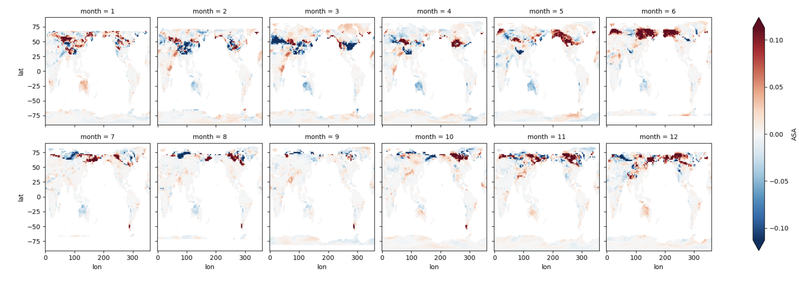

Basic Plotting#
BEFORE BEGINNING THIS EXERCISE - Check that your kernel (upper right corner, above) is NPL 2023a. This should be the default kernel, but if it is not, click on that button and select NPL 2023a.
This activity was developed primarily by Will Wieder and Peter Lawrence.
Global Visualizations#
These are examples of typical variables and plots that we look at in our land model diagnostics package. You can see examples of output from the land model dagnostics package here. The most current version of the land model diagnostics are in the CESM Postprocessing. More information here: CESM Postprocessing.
Notebook Objectives#
Become familiar with Jupyter Notebooks
Begin getting acquainted with python packages and their utilities
Plot a map and timeseries of global results
History files from CESM are saved in netcdf format (denoted with the .nc file extension), a file format commonly used for storing large, multi-dimensional scientific variables.
Netcdf files are platform independent and self-describing; each file includes metadata that describes the data, including: variables, dimensions, and attributes.
The figure below provides a generic example of the data structure in a netcdf file. The dataset illustrated has two variables (temperature and pressure) that have three dimensions. Coordinate data (e.g., latitude, longitude, time) that describe the data are also included.
Note that while each file for simulations has multiple variables. Within each h0 file, most of the variables have three dimensions (lat x lon x time), while a few soil variables (e.g., moisture, temperature) have 4 dimensions (lat x lon x time x depth).

We’ll start by loading some packages
The first step is to import the libraries needed to plot the data. Here we will use xarray as a tool to read the netCDF file. We will use numpy for some basic math calculations. For plotting the data we will need matplotlib and cartopy.
# python packages
import os
import xarray as xr
import numpy as np
import pandas as pd
# resources for plotting
import matplotlib.pyplot as plt
import cartopy
import cartopy.crs as ccrs
import cftime
%matplotlib inline
NOTE: This example largely uses features of xarray and matplotlib packages. We won’t go into the basics of python or features included in these packages, but there are lots of resources to help get you started. Some of these are listed below.
NCAR python tutorial, which introduces python, the conda package manager, and more on github.
NCAR ESDS tutorial series, features several recorded tutorials on a wide variety of topics.
Project Pythia links to lots of great resources!
GeoCAT examples, with some nice plotting examples
1. Reading and formatting data#
Note: the drop-down solutions, below, assume you used b.day2.1 output for plotting for this section
1.1 Point to the data#
The first step is to grab land (CTSM) history files from your CESM model run
For this example we will use:
reflected solar radiation (FSR),
incident solar radiation (FSDS), and
exposed leaf area index (ELAI)
# Set your username here:
username = "PUT_USER_NAME_HERE"
# Here we point to the archive directory from your b.day2.1 simulation
monthly_output_path = f"/glade/scratch/{username}/archive/b.day2.1/lnd/hist"
# If you were unable to successfully run the b.day2.1 simulation, then feel free to use
# this provided simulation data instead:
#monthly_output_path = "/glade/p/cesm/tutorial/tutorial_2023_archive/b.day2.1/lnd/hist"
# Name of CESM run
run_name = "b.day2.1"
# Create path to all files, including unix wild card for all dates
files = os.path.join(monthly_output_path, run_name + ".clm2.h0.*")
# read in files as an xarray dataset:
ds = xr.open_mfdataset(files)
NOTE: These are the raw history files that CTSM writes out.
By default, they include grid cell averaged monthly means for different state and flux variables.
Printing information about the dataset is helpful for understanding your data.#
What dimensions do your data have?
What are the coordinate variables?
What variables are we looking at?
Is there other helpful information, or are there attributes in the dataset we should be aware of?
# Print information about the dataset
ds
You can also print information about the variables in your dataset. The example below prints information about one of the data variables we read in. You can modify this cell to look at some of the other variables in the dataset.
What are the units, long name, and dimensions of your data?
ds.FSDS
1.2 Simple Calculations#
To begin with we’ll look at albedo that’s simulated by the model.
Albedo and can be calculated in several different ways, but the calculations use solar radiation terms that are handled within CTSM.
Here we’ll look at ‘all sky albedo’, which is the ratio of reflected to incoming solar radiation (FSR/FSDS). Other intereresting variables might include latent heat flux or gross primary productivity.
We will add this as a new variable in the dataset and add appropriate metadata.
When doing calculations, it is important to avoid dividing by zero. Use the .where function for this purpose
ds['ASA'] = ds.FSR/ds.FSDS.where(ds.FSDS>0)
ds['ASA'].attrs['units'] = 'unitless'
ds['ASA'].attrs['long_name'] = 'All sky albedo'
ds['ASA']
2. Plotting#
2.1 Easy plots using Xarray#
To get a first look at the data, we can plot a month of data from the simulation, selecting the month using the .isel function.
We will plot all sky albedo (variable =
ASA). Note that we select the variable by specifying our dataset,ds, and the variable.The plot is for the first year of data (
time=slice(0,12))This plotting function will plot
ASAfor each simulation in our dataset
More plotting examples are on the xarray web site
ds.ASA.isel(time=slice(0,12)).plot(x='lon',y='lat',col="time", col_wrap=6) ;
Click here for the solution
Figure: Plotting solution.
Question:
Why don’t you see the whole globe in some months?
2.2 Calculating differences#
We can calculate the differences between the beginning and end of the simulation to see the differences in albedo over the simulation period. The below code:
Calculates a monthly climatology for the first and last full year of the simulation
Defines the difference as a new variable,
dsDiff
We’ll first plot maps of the difference in all sky albedo for each month
dsIni = ds.isel(time=slice(0,12)).groupby('time.month').mean()
dsFin = ds.isel(time=slice(-16,-4)).groupby('time.month').mean()
dsDiff = dsFin-dsIni
dsDiff.ASA.plot(x='lon',y='lat',col="month", col_wrap=6, robust=True) ;
Click here for the solution

Figure: Plotting solution.
Questions:
How is albedo different in at the end of the simulation, relative to the begining of simulation?
Where are the differences the largest?
Are the differences consistent throughout the year?
What’s causing these albedo changes in different regions?
Are the differences coming from incoming or reflected radiation?#
To find out, we can plot each variable. First we will plot incoming radiation (the denominator in all-sky albedo).
dsDiff.FSDS.plot(x='lon',y='lat',col="month", col_wrap=6, vmax=30.0,vmin=-30.0) ;
Click here for the solution
Figure: Plotting solution.
Questions:
Do you see any dfferences?
Try plotting reflected radiation (the numerator, FSR). What differences do you see?
Note that you might want to change the minimun (vmin) and maximum (vmax) colorbar values for the plot when you switch between variables
Is exposed leaf area index (ELAI) contributing to the differences in albedo?#
Plot the differences in ELAI below.
dsDiff.ELAI.plot(x='lon',y='lat',col="month", col_wrap=6, robust=True) ;
Click here for the solution
Figure: Plotting solution.
Questions:
What regions are LAI differences the greatest?
What times of year is this true?
Are the regions and times of largest differences the same as the differences in albedo?
2.3 Calculating Time Series#
Note: the drop-down solutions, below, assume you used CESM2 Large Ensemble output for plotting for this section
As above, the plotting function we use here requires data to be 1D or 2D. Therefore, to plot a time series we either need to select a single point or average over an area.
2.3.1 Time series at a single point#
This example uses .sel, which functions similarly to the .isel function above, to select a single point in the Amazon.
What’s the difference between .sel and .isel?
.selselects a value of a variable (e.g., latitude of -5).iselselects an indexed point of a variable (e.g., the 6th point in the data vector)
In the below examples, we’ll also use subplots to see multiple variables in several panels
Also, the next few steps read in land model data from one of the CESM2 large ensemble historical runs. Note this operation points to multiple files on the campaign file system, so we are using the xarray function open_mfdataset for a multifile dataset. We will also print the dataset to get an idea of the metadata and dimensions. Note that we could use the output from the tutorial simulation. However, those runs are very short and thus are not a very interesting timeseries. Instead we can use one of the CESM2 Large Ensemble historical simulations. Rodgers et al. 2021
#First remove the old datasets
del ds
del dsDiff
### Here we point to the CESM2-LE datasets on campaign disk and
### Look at results from a single ensemble member
monthly_output_path = "/glade/campaign/cgd/cesm/CESM2-LE/lnd/proc/tseries/month_1"
run_name = "b.e21.BHISTcmip6.f09_g17.LE2-1001.001"
var_names = ['FSR','FSDS','ELAI']
### This piece of code opens the files and combines them into a single xarray dataset
da_list = []
for var_name in var_names:
files = os.path.join(monthly_output_path, var_name,
run_name + ".clm2.h0." + var_name + ".*")
ds_in = xr.open_mfdataset(files)
# keep history file attributes: This only needs to be done once
if var_name == 'FSR':
da_list.append(ds_in)
else:
da_list.append(ds_in[var_name])
del ds_in
''' quick fix to adjust time vector for monthly data'''
def fix_time(ds):
nmonths = len(ds.time)
yr0 = ds['time.year'][0].values
ds['time'] =xr.cftime_range(str(yr0),periods=nmonths,freq='MS')
return ds
ds = fix_time(xr.merge(da_list))
print('-- Your dataset is been opened --')
# Print information about the dataset
ds
#Calculate Albedo and add to dataset
ds['ASA'] = ds.FSR/ds.FSDS.where(ds.FSDS>0)
ds['ASA'].attrs['units'] = 'unitless'
ds['ASA'].attrs['long_name'] = 'All sky albedo'
ds['ASA']
point = ds.sel(lon=300, lat=-5, method='nearest')
point.ASA.plot(x='time') ;
Click here for the solution
Figure: Plotting solution.
Similar to the maps above, there are variations in albedo in the simulation at this location. Let’s add other variables to explore why we see differences at this location.
plt.figure(figsize=(10,6))
'''this first plot is the same as the one above'''
plt.subplot(221)
point.ASA.plot()
plt.xlabel(None)
'''now we'll look for potential sources of the difference'''
plt.subplot(222)
point.ELAI.plot()
plt.xlabel(None)
plt.subplot(223)
point.FSDS.plot()
plt.title(None)
plt.subplot(224)
point.FSR.plot()
plt.title(None) ;
Click here for the solution
Figure: Plotting solution.
Questions:
What variables show differences?
What variables are similar?
How do the differences and similarities help to explain the differences in albedo?
2.3.2 Global time series#
There are many reasons why we may want to calculate globally integrated time series for particular variables. This requires weighting the values from each grid cell by the total land area of individual grid cells. The example below does this for our dataset.
First calculate the land weights:#
land area
lathat is the product of land fraction (fraction of land area in each grid cell) and the total area of the grid cell (which changes by latitude). Units are the same as area.land weights
lw, the fractional weight that each grid makes to the global total, is calculated as the land area of each grid cell divided by the global sum of the land area.
The land weights are shown in the plot below. Note that these are larger near the equator, and smaller at the poles and along the coastline
la = (ds.landfrac*ds.area).isel(time=0).drop(['time'])
la = la * 1e6 #converts from land area from km2 to m2
la.attrs['units'] = 'm^2'
lw = la/la.sum()
lw.plot() ;
Click here for the solution
Figure: Plotting solution.
Next, calculate and plot a global weighted sum#
NOTE: You will likely want to calculate global weighted sum for a variety of different variables. For variables that have area-based units (e.g. GPP, gC/m^2/s), you need to use the land area variable when calculating a global sum. Remember to pay attention to the units and apply any necessary conversions! Keep in mind that grid cell area is reported in km^2.
dsGlobalWgt = (ds * lw).sum(['lat','lon'])
plt.figure(figsize=(12,5))
plotVars = ['ASA','FSDS','ELAI','FSR']
for i in range(len(plotVars)):
# First add metadata for plotting
dsGlobalWgt[plotVars[i]].attrs['long_name'] = ds[plotVars[i]].attrs['long_name']
dsGlobalWgt[plotVars[i]].attrs['units'] = ds[plotVars[i]].attrs['units']
# then make plots
plt.subplot(2,2,(i+1))
dsGlobalWgt[plotVars[i]].plot()
if i == 0:
plt.title('Weighted global sum',loc='left', fontsize='large', fontweight='bold')
if i<2:
plt.xlabel(None)
Click here for the solution
Figure: Plotting solution.
2.4 Calculate an annual weighted mean and create customized plots#
Annual averages require a different kind of weighting: the number of days per month. This example creates python functions that allow you to easily calculate annual averages and create customized plots.
Python functions: In python, creating a function allows us to use the same calculation numerous times instead of writing the same code repeatedly.
2.4.1 Calculate monthly weights#
The below code creates a function weighted_annual_mean to calculate monthly weights. Use this function any time you want to calculate weighted annual means.
# create a function that will calculate an annual mean weighted by days per month
def weighted_annual_mean(array):
mon_day = xr.DataArray(np.array([31,28,31,30,31,30,31,31,30,31,30,31]), dims=['month'])
mon_wgt = mon_day/mon_day.sum()
return (array.rolling(time=12, center=False) # rolling
.construct("month") # construct the array
.isel(time=slice(11, None, 12)) # slice so that the first element is [1..12], second is [13..24]
.dot(mon_wgt, dims=["month"]))
# generate annual means
for i in range(len(plotVars)):
temp = weighted_annual_mean(
ds[plotVars[i]].chunk({"time": 12}))
if i ==0:
dsAnn = temp.to_dataset(name=plotVars[i])
else:
dsAnn[plotVars[i]] = temp
# Make a simple plot
dsAnn.isel(time=0).ELAI.plot(x='lon',y='lat',robust=True) ;
Click here for the solution
Figure: Plotting solution.
dsAnn
2.4.2 Customized maps#
Creating a function isn’t necessary to plot maps, but this function, which uses python’s cartopy, allows you to make several pretty maps in one figure.
Additional examples and information are available on the cartopy website
There are two code blocks below. The first block of code defines the function. The second code block creates the plot.
import cartopy.feature as cfeature
from cartopy.util import add_cyclic_point
import copy
# Generate a function for making panel plots of maps
## many of these features are not required, but provide additional control over plotting
def map_function(da, cb=0, cmap='viridis', panel=None, ax=None,
title=None, vmax=None, vmin=None, units=None,nbins=200):
'''a function to make one subplot'''
wrap_data, wrap_lon = add_cyclic_point(da.values, coord=da.lon)
if ax is None: ax = plt.gca()
# define the colormap, including the number of bins
cmap = copy.copy(plt.get_cmap(cmap,nbins))
im = ax.pcolormesh(wrap_lon,da.lat,wrap_data,
transform=ccrs.PlateCarree(),
vmax=vmax,vmin=vmin,cmap=cmap)
# set the bounds of your plot
ax.set_extent([-180,180,-56,85], crs=ccrs.PlateCarree())
# add title & panel labels
ax.set_title(title,loc='left', fontsize='large', fontweight='bold')
ax.annotate(panel, xy=(0.05, 0.90), xycoords=ax.transAxes,
ha='center', va='center',fontsize=16)
# add plotting features
ax.coastlines()
ocean = ax.add_feature(
cfeature.NaturalEarthFeature('physical','ocean','110m', facecolor='white'))
# control colorbars on each plot & their location
if cb == 1:
cbar = fig.colorbar(im, ax=ax,pad=0.02, fraction = 0.03, orientation='horizontal')
cbar.set_label(units,size=12,fontweight='bold')
if cb == 2:
cbar = fig.colorbar(im, ax=ax,pad=0.02, fraction = 0.05, orientation='vertical')
cbar.set_label(units,size=12)#,weight='bold')
Now make the plot!#
i = 0
fig, axes = plt.subplots(nrows=2, ncols=1, figsize=(13,6), constrained_layout=True,
subplot_kw=dict(projection=ccrs.Robinson()))
for index, ax in np.ndenumerate(axes):
if i == 0:
plotData = dsAnn.ELAI.isel(time=slice(-10,None)).mean('time')
map_function(plotData, ax=ax,cb=2,
panel='(a)', nbins=10,
vmax=5,vmin=0,
units='Final Annual ELAI')
if i == 1:
plotData = (dsAnn.ELAI.isel(time=slice(-10,None)).mean('time')- \
dsAnn.ELAI.isel(time=slice(0,10)).mean('time'))
map_function(plotData, ax=ax,cb=2,panel='(b)',
units='Annual ELAI Change, Final-Initial',
cmap='bwr',nbins=7,
vmax=0.75,vmin=-0.75)
i = i+1
Click here for the solution

Figure: Plotting solution.
Extra credit challenge#
If you have extra time & energy, try running through this notebook with other variables. Interesting options could include:
Latent heat flux (the sum of
FCTR+FCEV+FGEV) orGross Primary Production (
GPP)
HINT: pay attention to units for these challenges.